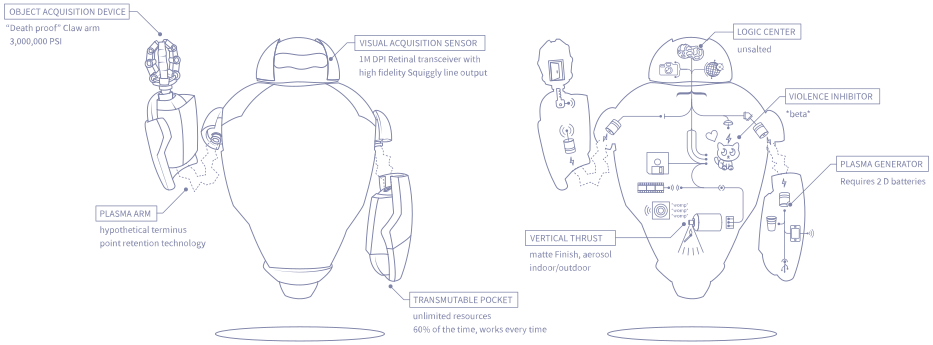
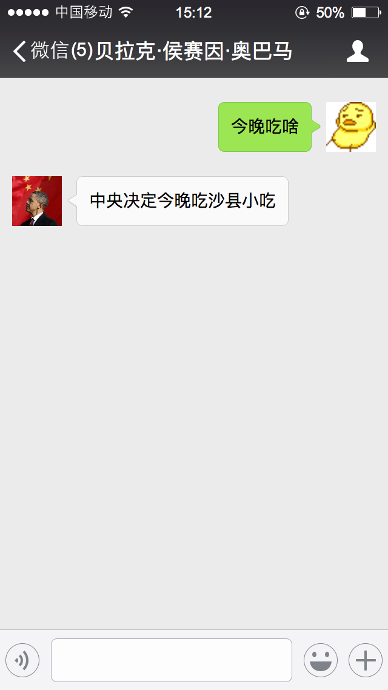

class: center, middle, inverse # 快速搭建聊天机器人  --- class: center, middle, inverse # 安龙 @ .red[LeanCloud] --- class: center, middle, inverse ## 家住北京市海淀区的程序员小张 ## 最近遇到了一件烦心事 --- class: center, middle, inverse ## 「今天晚上要吃啥？」 --- class: center, middle, inverse ## 产品经理给出了一个解决方案： --- class: center, middle, inverse  --- class: center, middle, inverse ## 实现一个聊天机器人 --- .left-column[ # Hubot ## Send & reply ] .right-column[ ### Send & reply ```js module.exports = function(robot) { robot.hear('/今晚吃啥/', function(res) { res.send(res.random([ '沙县小吃', '开封菜', '桂林米粉', ])); }); } ``` ] --- .left-column[ # Hubot ## Send & reply ## Capturing data ] .right-column[ ### Capturing data ```js module.exports = function(robot) { robot.hear('/奥总统，你觉得(.*)做下任美国总统好不好？/', (res) => { var candidate = res.match[1]; res.send(` 你问我啊，我可以回答你一句“无可奉告”，你们也不高兴，那怎么办？ 我讲的意思不是我钦点**${candidate}**当下任美国总统。 你问我支持不支持，我是支持的，我就明确地告诉你这一点。 `); }); } ``` ] --- class: inverse, middle, center # F & Q